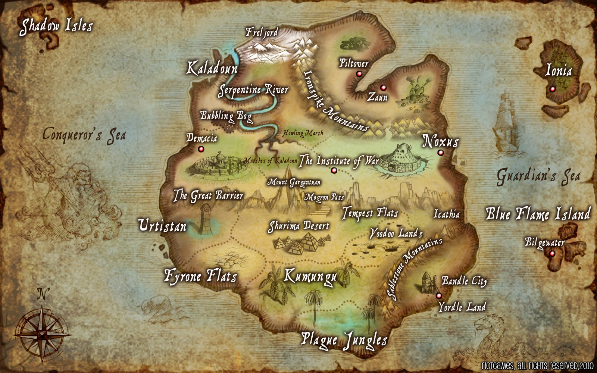

¿Que es Valoran?
Demacia, parangón de la justicia y el bien en toda Valoran, es aliada de Piltover, ciudad del progreso, y enemiga de Noxus, la ciudad conocida por su afán de guerra. Noxus y Zaun mantienen una alianza no oficial, es decir, se ayudan en todo lo que les beneficie a ambos, pero oficialmente, son neutros. Zaun y Piltover también mantienen una rivalidad, pero no tan sangrienta como la de Demacia y Noxus. Esta rivalidad se basa más en una competición por liderar la investigación tecnológica que en demostrar una superioridad militar. Por último, las ciudades-estado restantes no mantienen ningún tipo de relación oficial entre ellas, es decir, se mantienen neutrales unas con otras (aunque tanto Freljord como Jonia guardan resentimiento a Noxus por los ataques recibidos en los últimos años).
Las ciudades-estado más importantes son Demacia, Noxus, Piltover y Zaun. Aquí encontraréis también información sobre las otras cuatro ciudades-estado de Valoran. La información es mucho más escueta por dos razones: La acción esta pensada que suceda en Demacia y Noxus, y están Piltover y Zaun porque pueden dar mucho juego. La otra razón, es que la historia oficial no trata muy bien a estas cuatro ciudades, así que no se sabe tanto sobre ellas. Si hiciesen falta para la historia, se ampliaría esta zona.
Mapa de Valoran
Contemplemos la tierra de Valoran con todas sus ciudades-estado.
